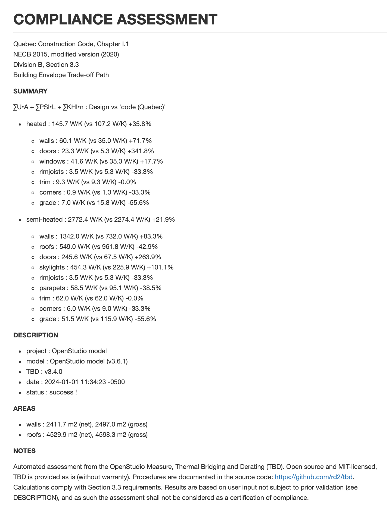

UA’
Many building energy codes offer traditional prescriptive paths, as well as simulation-based performance paths, as means to comply. Trade-off paths are intermediates, where compliance can be assessed for a particular sub-domain like building envelope or interior lighting.
Common trade-off solutions for building envelopes (at least in North America) are UA trade-offs, whereby one or more non-compliant envelope components (e.g. spandrel panels) can be compensated by one or more improved components (e.g. roof insulation). Traditionally, UA trade-offs are based on total envelope heat loss (in W/K), as supported by REScheck:
UA = ∑Uo•A
… where:
Uo : clear field transmittance
A : opaque surface area
If the total UA of a proposed envelope design is equal or inferior to the corresponding total UA of a reference (complying to prescriptive requirements), then the proposed design complies. This simplified approach is considered suitable for cold climates, as long as one operates within a well-defined scope:
- UA is power-based (W), instantaneous
- time-delayed responses are not factored-in …
- so forget thermal mass, ground heat loss, solar, etc.
- fenestration U-values and areas are factored-in …
- yet differences in fenestration areas are not
Major thermal bridging
Québec’s recent energy code (Section 3.3) expands on the concept by including major thermal bridges in the mix:
UA' = ∑Uo•A + ∑psi•L + ∑khi•n
… where:
psi : linear edge transmittance
L : length of the edge
khi : e.g. column point transmittance
n : number of similar columns
If the proposed total UA’ is equal or inferior to the reference total UA’, then the proposed design complies.
UA’ menu options
TBD automatically processes what’s required (inputs) to carry out UA’ assessments, as well as what’s often needed to demonstrate compliance (outputs) for code authorities. See TBD’s menu options under Basics:
UA’: checkbox enabling UA’ assessments
UA’ reference: vs which prescriptive requirements?
The UA’ reference pull-down options correspond to TBD’s Default thermal bridge sets. If the “code (Quebec)” option is selected, then the reference prescriptive requirements include code-required Uo-values, in addition to code-required psi & khi values (see Where does one get psi data? under Basics). For all other UA’ references, only the psi & khi values differ between proposed vs reference cases. It’s best to generate UA’ assessments under the Apply Measures Now mode, and UNCHECK the Alter OpenStudio model option.
Note that UA’ calculations will factor in uprated assemblies, if selected.
Assessments
In addition to standard TBD feedback (see Reporting), UA’ assessments pop up in the OpenStudio Application runner messages, in the autogenerated tbd.out.json file, and in dedicated UA’ reports (.md files, in both French and English):

The Summary is the key output to scrutinize. For both heated and semi-heated sections (if applicable), UA’ totals (in W/K) give a sense of how close (or far) one is to reaching selected targets. Here (a hypothetical warehouse variant), the proposed design is considerably off the mark for both heated (+83.3%) and semi-heated (+113.7%) sections.
Results are further broken down into individual envelope components, such as walls, roofs, doors, windows, etc., and applicable thermal bridges (e.g. “trim” for all fenestration perimeters). This allows one to assess the relative impact of each item, where to concentrate future efforts, etc. For instance, the proposed doors in both heated and semi-heated sections are considerably off code requirements, yet their relative weight is limited to 5% to 10% of UA’ totals.
TBD does not report on elements that are not part of the building envelope. In this warehouse example, the heated section is limited to a ground floor office - its ceiling connected to a storage space above. As the office ceiling is not a roof per se i.e., not part of the building envelope, TBD only reports on the semi-heated roof surfaces. Similarly, only thermal bridges identified by TBD in the OpenStudio model are part of the assessment e.g., no balconies here.
The UA’ assessments are MD-formatted, which can be rendered as HTML or even PDF, depending on the text editor or web browser.